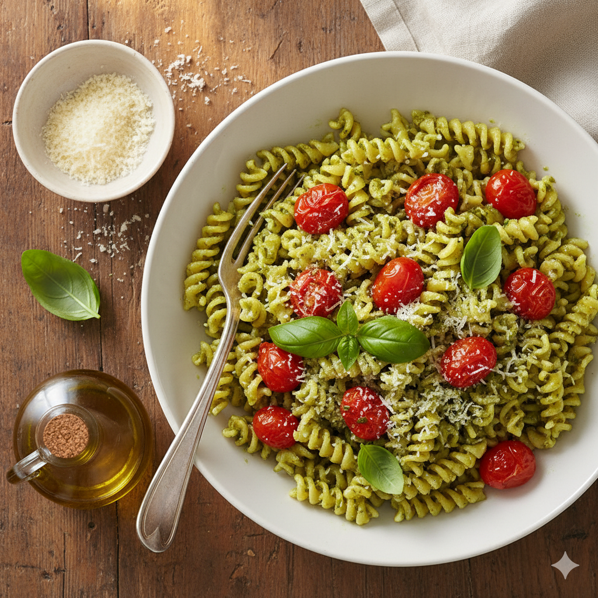
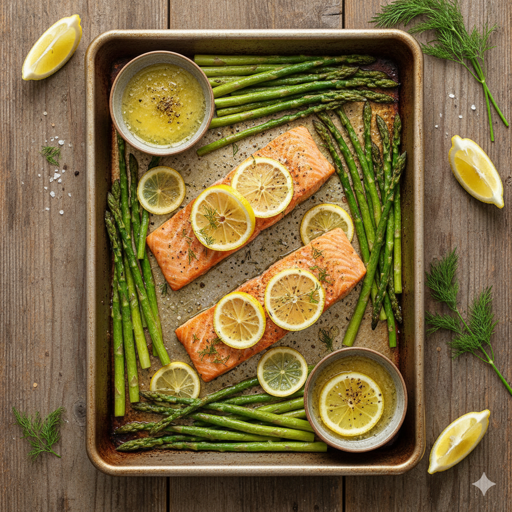
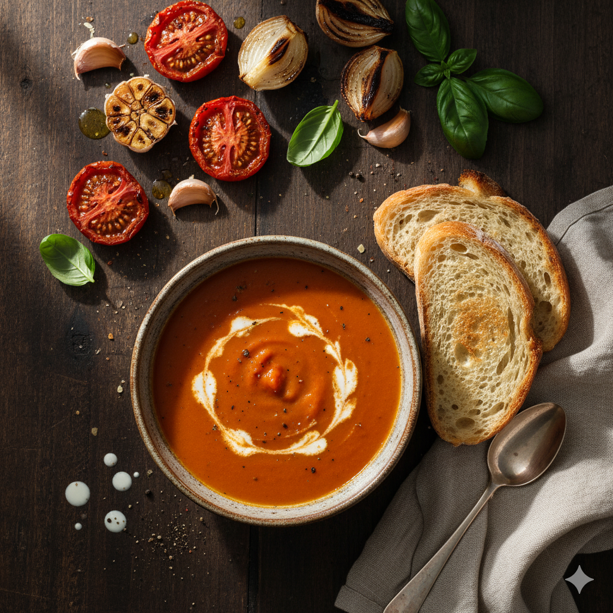

Inicio
Contacto y Creadores
Suscribirse
Configuración

Pasta al pesto con Tomate
Ver Receta

Salmon al Horno con Esparragos y limon
Ver Receta
Tacos de Pollo Desmenuzado
Ver Receta

Sopa de Tomate Asado
Ver Receta